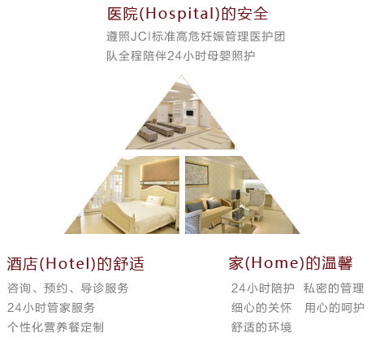
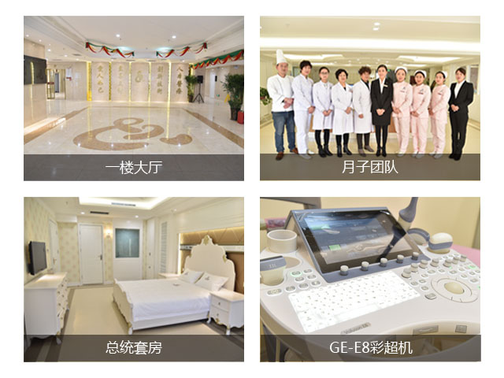

圣玛全面导入FCWI(Full Care for Women and Infants)全程化妇产科医疗服务模式，将孕产妇视为尊贵的客人，针对她们在孕前、孕中、待产、分娩、产后等全过程的医疗保健、健康宣教、以及婴儿护理等全方位照护的国际妇婴保健医疗服务模式。
开封新区圣玛医院是经上级主管部门批准的专业妇产医院，总投资1.2 亿元，医用面积1.66万平米，坐落于开封市西环路与向阳路交叉口，位置优越，环境优美，其温馨、舒适、优雅的内部设计可为广大妇婴提供卓越的人文关怀与服务体验。
秉承着“高端化妇婴医疗服务”的医院建设方针，圣玛本着“倡导绿色孕育，享受优质服务”的理念，不断强化品牌建设，引进高端人才，整合国内外优质妇婴医疗资源。目前，秉承国际JCI医院管理标准、导入FCWI全程化产科医疗服务模式、建立国际化3H医疗模式。
“以孕妇为中心”是圣玛妇产医院的核心经营理念，与传统妇产医疗服务侧重“分娩”服务不同的是，圣玛构建了一整套完善的服务体系，包括对孕妇进行孕前、孕中、待产、分娩、产后等全过程的医疗保健和健康管理，体现出“一站式” “立体化” “360度”全程管家式服务特色，将高品质医疗服务贯注于每一个细节，让顾客体验到细致周到、无微不至的关怀，享受无上尊崇。
圣玛全面导入FCWI(Full Care for Women and Infants)全程化妇产科医疗服务模式，将孕产妇视为尊贵的客人，针对她们在孕前、孕中、待产、分娩、产后等全过程的医疗保健、健康宣教、以及婴儿护理等全方位照护的国际妇婴保健医疗服务模式。
开封女性孕产服务首选
母婴医疗服务领域翘楚
| 一种新型染色体疾病筛查技术，其准确率高、无创伤，代表了当前产前检测和防止先天性缺陷儿出生技术的新发展方向。 |
| 技术成熟，省内最好麻醉师 ，国外进口最好麻药，让产妇不用开刀轻松生产。 |
| 世界先进的美国GE-E8四维设备， 超高清成像效果，知名四维医生坐诊，大大提高省内胎儿畸形检出率，广受孕妈妈好评。 |
| 院内特设家庭式月子中心，"9对1"尊崇服务享受，24小时监控与专业母婴护理，让产后妈妈调整体型、为宝宝健康打下基础。 |
| 妈妈大学作为医院的重点公益服务，是为准爸妈们特别设置的一个科学孕育教育平台，医生为孕期女性讲授专业孕产知识。 |